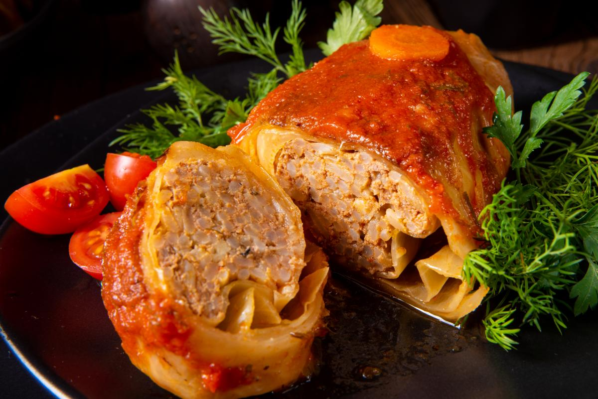

Повернутися на головну
Рецепти та інструкції для приготування страв
Рецепт корисного та смачного салату, який ви можете легко приготувати вдома. Це буде свіжий салат фрфалле з лимонною руколою та фісташковим соусом
Справжній український борщ: Покроковий рецепт приготування насиченого червоного борщу з усіма секретами
Найсмачніші домашні голубці: як приготувати неймовірну страву
